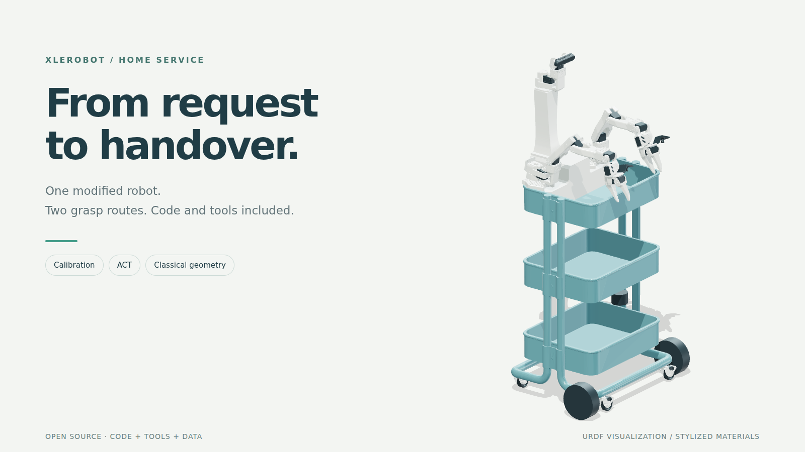
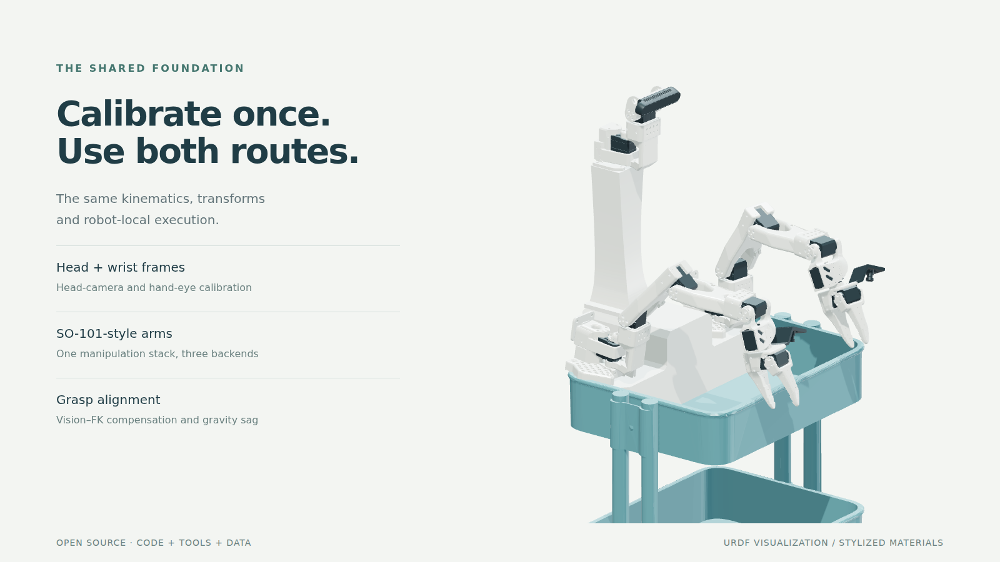
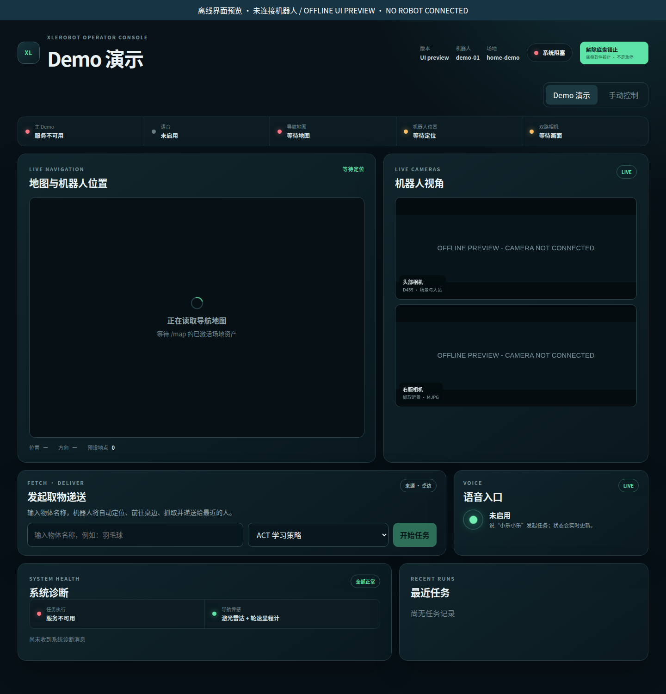
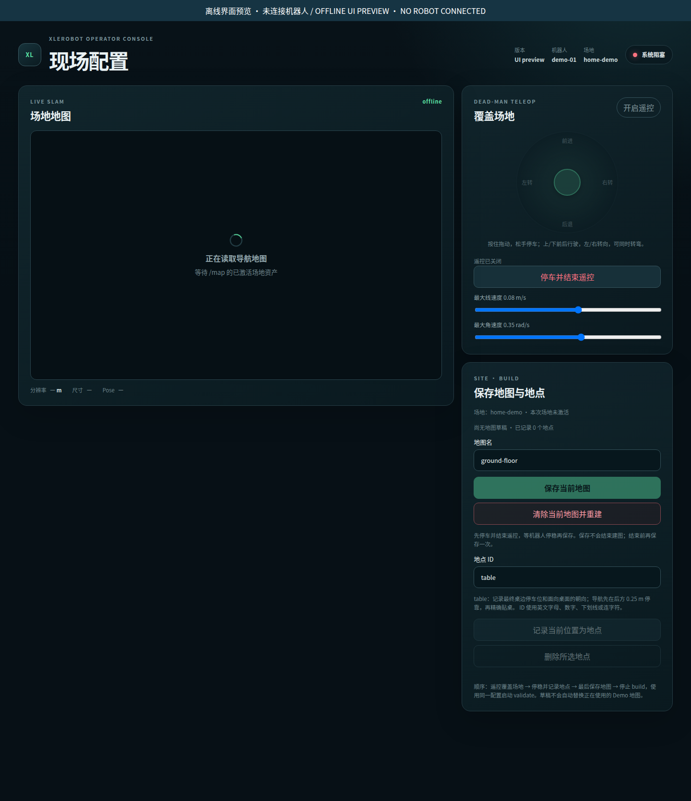
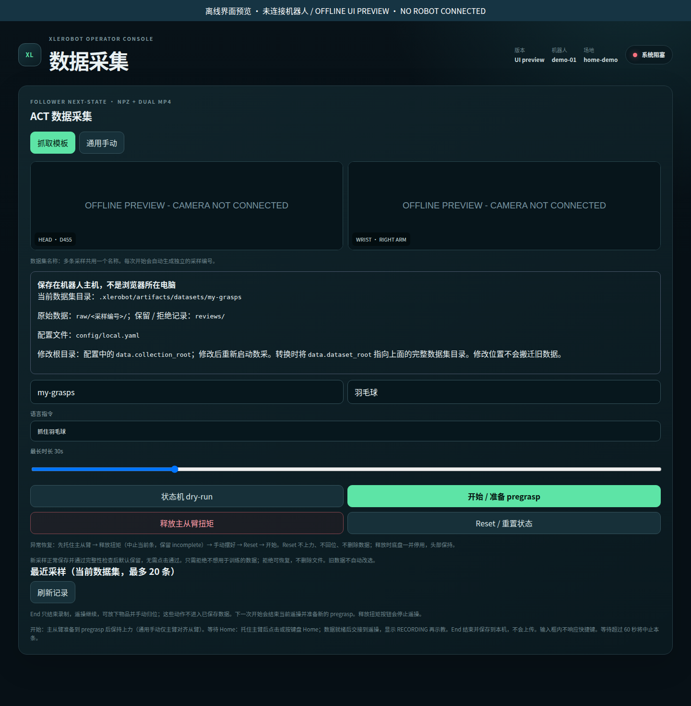

ROUTE A / HYBRID LEARNING 主 Demo
混合 ACT 抓取
先用视觉定位物体，规划到预抓取位置，再让 ACT 根据腕部图像和关节状态完成局部接触阶段。
RGB-D 粗目标MoveIt 预抓取ACT chunks本地执行
ACT 学的是局部抓取，不是整段导航与递送。默认后端为
act，Demo 默认物品为羽毛球。我对 XLeRobot 稍加改造，做了一个会听指令、去桌边取物、再送到人面前的 Demo。现在把实现和配套工具整理出来，欢迎参考，也欢迎抄作业。

REFERENCE BUILD / TWO WHEELS一句语音指令，或一次网页操作，触发完整取物递送流程。以下是实际机器人与操作界面的视频。

导航、感知、抓取、寻人、递送，一条完整流程。

MoveIt 预抓取 + 腕部视觉 ACT。

任务下发、实时画面与执行状态。
ACT 是主展示路线，centroid 与 GPD 是同级可选的几何后端。三者共用机器人运行栈、标定和任务接口。
先用视觉定位物体，规划到预抓取位置，再让 ACT 根据腕部图像和关节状态完成局部接触阶段。
RGB-D 粗目标MoveIt 预抓取ACT chunks本地执行act，Demo 默认物品为羽毛球。VLM 找到目标，SAM 2 分割物体，RGB-D 精炼物体与桌面。选择质心顶抓，或使用 GPD 排序后的候选。
VLM + SAM 2RGB-D 点云centroid / gpdMoveIt 执行远程 GPU 提供感知与策略推理，本体执行运动。查看后端实现与运行方式 ↗
不只给一份配置，还提供采集网页、求解、质量报告、可打印标靶和离线 replay。让自己的机器人有自己的标定。

双从臂与头部按组记录零位和行程，网页显示实时位置与覆盖范围，支持暂停和继续。
从臂与头部流程已通过真机验收网页预览整块 4×4 AprilTag 板，确认后自动转头、等待稳定、采样、求解并保存草稿。
自动采集与求解已完成真机实验夹爪固定 Tag 23。20 个姿态拟合并冻结参数，再用 6 个不同姿态验证；网页分别展示残差与逐姿态误差。
软件流程已通过 · 真机验收待完成另提供底盘实测与抓取对齐步骤。标定先保存为草稿，完整 bundle 需显式激活。拟合残差、独立视觉/FK 一致性与夹爪实际精度是不同的验证；后续实测精度仍待验收。
建自己的地图，收自己的示教数据，也可以直接下载公开权重。每个工具都围绕复现这台机器人展开。



以上为实际前端的离线布局截图，不表示机器人在线或完成了任务。工具页面目前使用中文。
tools/setupRobot / GPU 源码安装tools/doctor依赖、配置与服务诊断tools/calibrate采集、求解、激活、回滚与 replaytools/act采集、转换、训练、评估与下载tools/runGPU 服务、建图、抓取后端与完整 Demo范围很明确：当前双轮改装 XLeRobot。先对齐参考硬件和环境，再配置自己的设备、标定和场地。
使用公开 ACT 权重无需先采集训练；只有收集自己的数据时才需要右 Leader 示教臂。
git clone --recurse-submodules https://github.com/xujiayuxian-png/xlerobot_home_service_demo.git本页是项目介绍，不连接机器人。真实运动需要显式 --hardware；地图、设备标定和本机配置不随仓库分发。
从已训练好的策略开始，或用配套工具采集你自己的示教。大文件托管在 Hugging Face，主仓保留版本与下载校验信息。
公开用于当前 ACT checkpoint 训练的黄色胶棒抓取示教数据。
查看 Hugging Face 数据集 ↗以腕部 RGB 和六关节状态作为输入，输出由机器人本地执行的动作片段。
查看模型卡与下载权重 ↗训练数据仅包含 30 条黄色胶棒示教。羽毛球和其他物体属于定性泛化展示，不代表未经统计的成功率或通用抓取能力。第三方模型保留各自许可，人员检测器为显式 AGPL 可选项。
{kind=link}